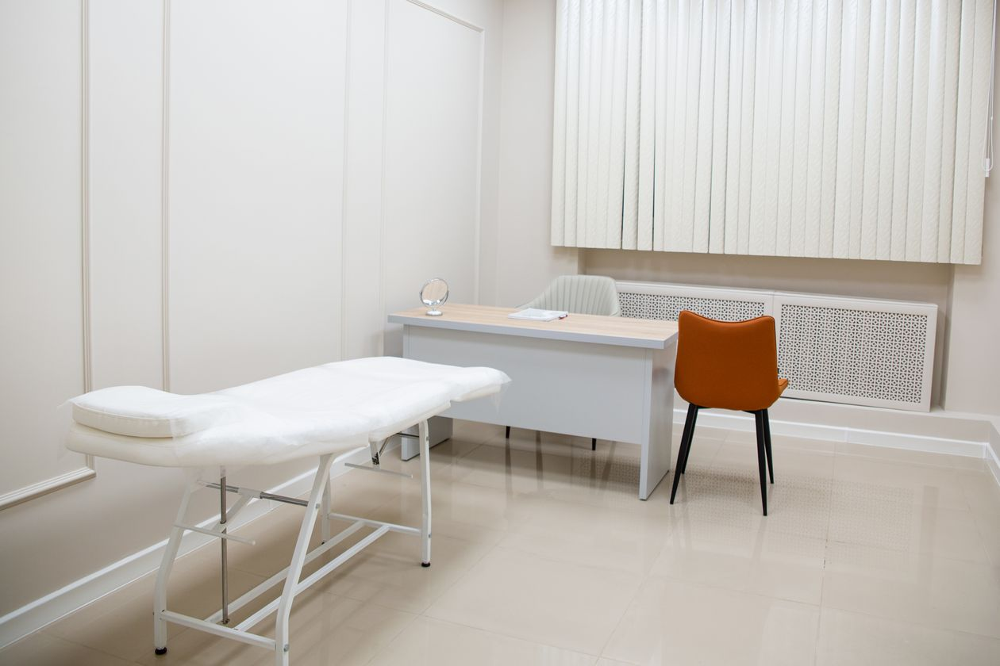

A small private GP practice · Clifton, Bristol
Unhurried medicine, plainly priced.
One named doctor, a list capped at 900 patients so appointments stay bookable, and a standard appointment of twenty minutes — twice the slot most patients are used to. Every fee is printed on this page, in full, before you book anything.
- Standard appointment
- 20 minutes
- First visit
- 45 minutes
- Registered patients
- 868 of a 900 cap
- Your doctor
- Dr Lawson, every time

The appointment planner
Choose the appointment the problem actually needs
Most rushed medicine starts with the wrong slot. Pick a type and the sheet shows exactly what it covers, what it does not, what it costs and what to bring — the same wording the printed fee table below uses.
Appointment types
Fees and durations below are asserted against the printed fee table — they are the same numbers, not a second list.
First visit
What it covers
What it does not cover
What to bring
- Fee
- £120
- 45 minutes · with Dr Lawson Enquire about this appointment →
This planner describes how the practice works. It is practice information, not medical advice, and it does not book anything — booking is by phone or in person, so a person can check the slot fits the problem.
The practice, in numbers
Published by us, about us
These are the Lawson Family Practice's own figures, published November 2026 and reviewed quarterly. A small list is a choice: it is what makes the waits below possible.
868 / 900
Registered patients. The list closes at 900 so appointments stay bookable — when it is full, we run a waiting list and say so.
3 days
Longest wait for a routine appointment, November 2026. Most routine requests were offered a slot within two working days.
8:00 am
Same-day urgent slots are released every weekday morning at eight, and held back from advance booking on purpose.
94 / 100
Appointments held with your own named doctor in the last quarter. Continuity is the point of a small practice.
Fees in full
Every fee, printed before you book
This table is the whole price list for consultations. It is reviewed each April and the current version is the one on this page. The row for the appointment you pick in the planner above is highlighted — same figures, both places.
| Appointment | Duration | Fee | Notes |
|---|---|---|---|
| First visit | 45 minutes | £120 | Full history, examination, plan, records set up. Payable at booking. |
| Standard appointment | 20 minutes | £75 | One main problem, or follow-up of care under way. |
| Extended review | 40 minutes | £110 | Several problems together, annual review, medication overhaul. |
| Minor procedure slot | 30 minutes | £95 | Plus materials at cost, quoted before the slot — never added after. |
| Telephone results call | 10 minutes | £25 | A booked call at a set time, with the doctor who ordered the test. |
| Home visit | As needed | £160 | Within three miles of the practice, for registered patients who cannot come in. |
The Lawson Plan — for people who come regularly
A monthly plan for registered patients who expect to use the practice through the year. The arithmetic, in the open:
£32 a month × 12 = £384 a year
Included: 4 standard appointments (4 × £75 = £300) + 1 extended annual review (£110) = £410 pay-as-you-go
So the plan saves £26 across the year — and adds priority booking for the 8:00 am urgent slots.
Anything beyond the included appointments is charged at the table above. Cancel with one month's notice; unused appointments do not roll over, and we will tell you in October if you have some left.
What no fee includes
Plainly, so there are no surprises:
- Medicines — paid to the pharmacy, at the pharmacy's price. We take nothing from prescriptions.
- Laboratory tests sent out — £18–£64 at cost, quoted to you before anything is sent, and only sent with your agreement.
- Specialist care after referral — the specialist's own fees are theirs. Our referral letter is included in your consultation fee.
- Certificates and forms — £30–£60 from the printed list at reception, agreed before we start.
“The extended review is the first annual check I have had where the fee, the forty minutes and the written plan were all agreed before I sat down. Nothing about it felt rushed, and nothing about the bill was a surprise.”
Margaret Ellison — Chair, Practice Patient Panel, on the Extended Review (£110, 40 minutes). The panel reviews this page, and the fee table, every year.
Joining the practice, or a question about fees?
One contact path, answered by reception within one working day. Please don't send medical details by email or form — phone us for anything clinical.